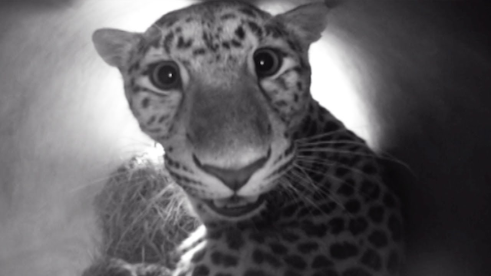

Sea Turtle
Pandas subsist almost entirely on bamboo, eating from 26 to 84 pounds per day and can poop up to 28 kilos (62 lb) per day!
Learn More

Amur Leopard
Sea turtles are deep divers and can stay underwater for long periods of time!
Learn More
Sea Turtle
They are said to be the most accomplished stalkers and climbers of the big cats, and their immense strength allows them to tackle prey up to 10 times their own weight!
Learn More